我擅长把模糊的业务问题变成可量化的标尺，再用工具让判断可复用——在电商供给侧的一线， 我沉淀出一套数据驱动的决策方法，并把它做成了一个 AI 决策产品。
比起单一的业绩结果，更能说明问题的是稳定的工作方式。以下三点贯穿本作品集的人、货、产品各部分，也是我处理业务问题时相对固定的路径。
"这个账号是否值得投入""这个品类是否值得做"，这类判断往往依赖主观经验。我倾向先将其转化为可被数据回答的问题，再建立一条可复核的标准线。
例：用数学模型反推首播准入门槛；把全站创作者切成 233 组对照基准，让每个指标都有参照系。
一个判断是否成立，最终取决于能否被实际结果检验，而非论证是否完整。因此我倾向先以小样本或 AB 实验验证，再放大资源投入。
例：选两场同量级大场做对照，用实测数据验证品类判断；把品类指南的预测与真实成交逐条对账，含没命中的部分。
一次判断只解决一个对象、一个场次。我会把判断过程沉淀成模型、工具或知识库，让下一个人可以直接调用。
例：8 个自建工具 + 一个端到端 AI 决策产品「先知后行」，把个人经验转化为人人可查、可比、可复用的组织资产。
处理不同业务问题时，我沿用同一套路径。它不依赖特定行业背景，具备迁移性——这也是本作品集后续每一部分的底层逻辑。
把"GMV 不足""该找谁"这类模糊命题，拆解成人、货、场三类可归因的具体问题，先定位问题所属层级。
用数据给出可量化依据，把主观经验变成可排序、可复核的标准——这是整套方法里最关键的一步。
先做 AB 实验或小样本验证，确认逻辑成立，再放大资源投入，避免一次性押注。
把判断过程做成下次可直接调用的模型、工具或知识资产，让判断脱离个人、成为组织能力。
缺少标尺时，判断只能依赖个人经验，难以被检验；建立标尺意味着判断可复核、可被下一个人复用。而沉淀成工具，判断才能脱离个人、成为组织能力。
本作品集的重头戏「先知后行」，正是这套方法走到"产品化"这一步的结果。
这是我独立设计并落地的一个端到端产品。它的核心不是让 AI 替人做判断，而是先为 AI 建立一个"可比的坐标系"，把资深买手才具备的判断依据，转化为人人可查、可比、可复用的结构化输入。
我在哪：这个账号值不值得投入
往哪走：陌生品类怎么做起来
怎么走：判断翻译成一场直播
走对没：预测与真实成交对账
同样一个模型，输入"该账号月 GMV 500 万"与输入"该账号月 GMV 500 万，在同垂类同粉段样本中位于 P94"，输出质量差异显著。
先建立坐标系，再引入 AI——其中最关键的两个环节，是为 AI 建立对照组，以及用真实结果回溯验证。
技术实现：FastAPI + 原生 JS 单页（图表均为手写 SVG），部署于公司内部应用平台，AI 能力走内部网关。下方分述两个核心模块。
建联新账号时，"这个账号是否值得投入"主要依赖经验判断。仅看粉丝量会被大号误导，仅看 GMV 又会漏掉起步期的潜力账号——根本问题在于缺乏参照系。
引入对照组思维：全站按"垂类 × 粉丝段"切 233 组，每个指标只跟同类同体量的人比，插值算百分位；再把变现拆成蒲公英 / 电商 / 内容三条路分别打分。
一份可直接用于建联沟通的诊断结论：优势项、短板项、下一步主攻路径与同水平对标对象。分数偏低并非说明账号不佳，而是该路径尚未开展——这恰是拓新的机会点。
垂类内样本不足 30 人时自动降级为全站同粉段口径，页面如实标出实际用的是哪一种——避免小样本分位失真。这类"看起来很笨"的处理，正是让判断经得起追问的地方。
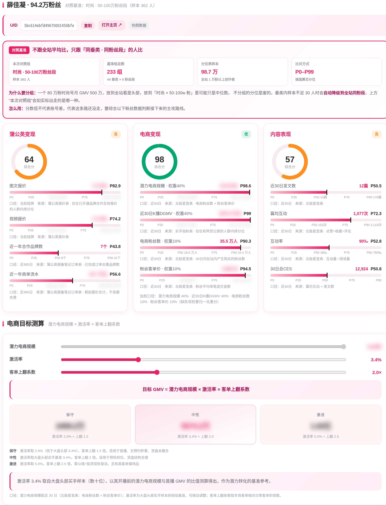
买手要拓一个陌生品类（如一直播黄金、现在要开沉香专场），买手和运营都缺前置认知，准备工作繁重；而优质买手翻一次车，损失不止一场 GMV。
把品类认知拆成知识层 + 数据层：知识层沉淀行话、分级、雷区；数据层接站内真实场次——谁在做、卖什么价、爆品长什么样。AI 在两层之上做解读，而非无依据生成。
21 品类可查手册，把一次性经验变成组织能力；再由 AI 提炼出爆品公式（备什么货）与内容公式（发什么拉预约）。
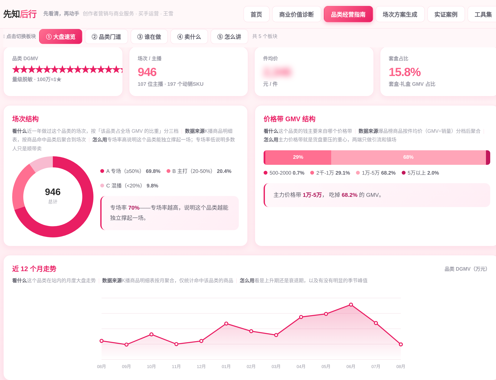
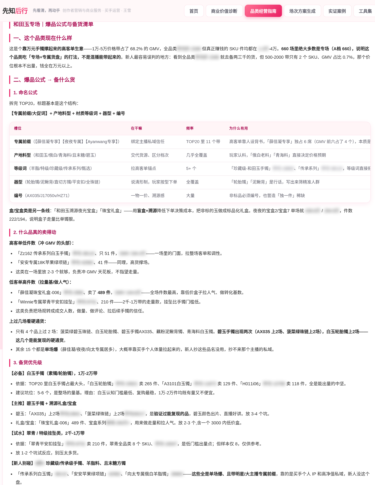
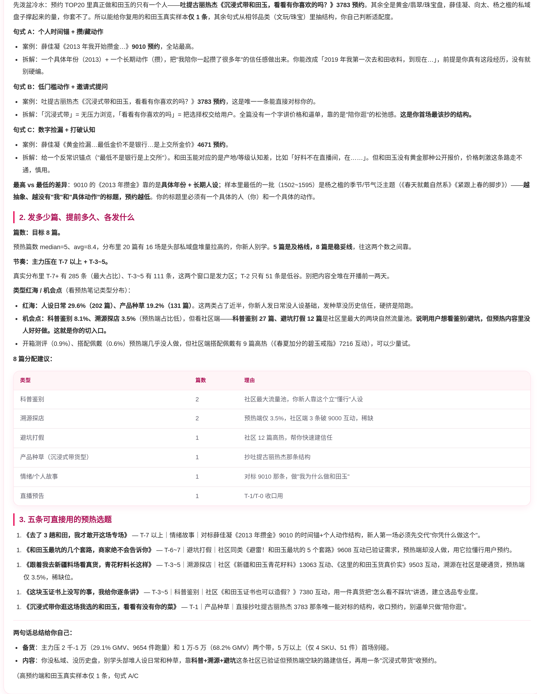
提示词中明确要求：数据不足以支撑结论时直接说明样本不足，不得推测。上图创作指南中，AI 主动标注了"预约榜中和田玉真实样本仅 1 条，句式系从相邻高客单品类迁移得出"——明确数据边界，比输出一份完整但来源存疑的结论更重要。
前面的方法与产品，最终要经得起结果检验。以下三个合作对象均为首次开播或首次拓新品类，无历史场次可参考，结果在相当程度上反映了前置判断的质量。
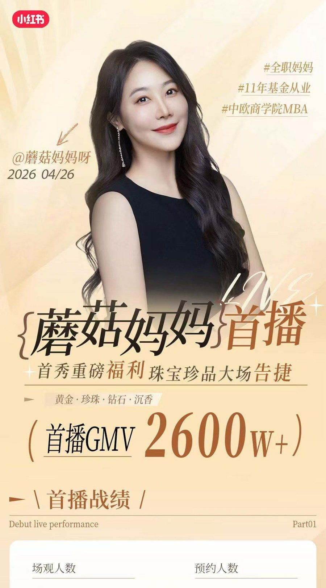
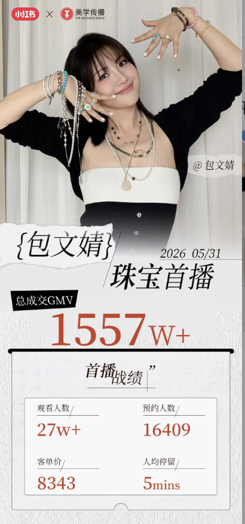
我主要负责前置的判断与策略：用什么标准选人、货盘如何配置、内容如何规划。下面以蘑菇妈妈与薛佳凝为例，呈现"数据分析 → 策略 → 工具 → 结果"这条完整链路（包文婧一场负责协同组货盘：按明星分型定位高端珠宝与轻奢黄金，对齐目标客单与坑位价格结构）。
组内验证过"财经账号高客单大场可跑通"，需批量复制，但当时站内相似账号推荐功能尚未上线——只能自己建标准。
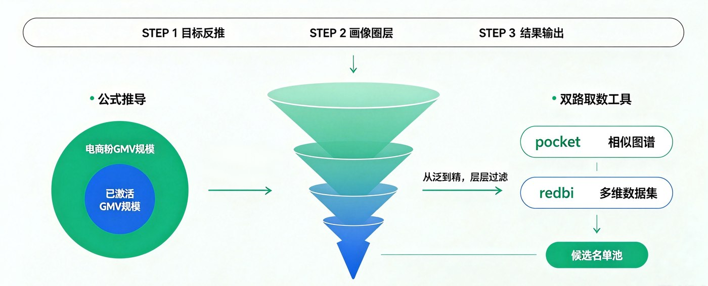
模型的意义不在于找到某一个人，而在于把"什么样的账号可能跑通"变成一条可复核的基准线，后续任何同类赛道都能直接套用。
头部账号从多品类转向单品类深耕，品类选错将导致货盘、招商、内容整体返工。核心问题：什么品类能同时满足大盘有量、趋势向上、且结算收益可兑现。
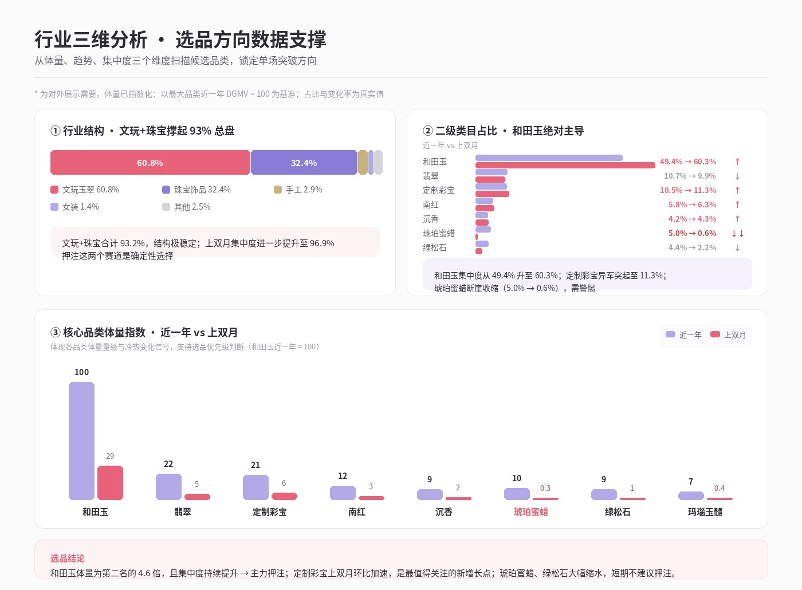
它本质是一套"先看大盘、再看质量、最后小步实证"的通用选品决策流程——可迁移到任何赛道，也是我把方法沉淀成产品的直接来源。
存量买手拓一个全新品类，买手与运营都不了解沉香。这一场是「先知后行」品类指南的真实落地场景，也是我把方法沉淀成产品后反向验证的一次实战。
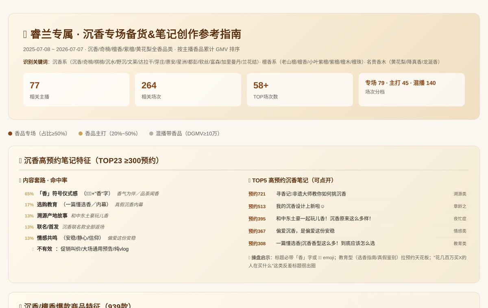
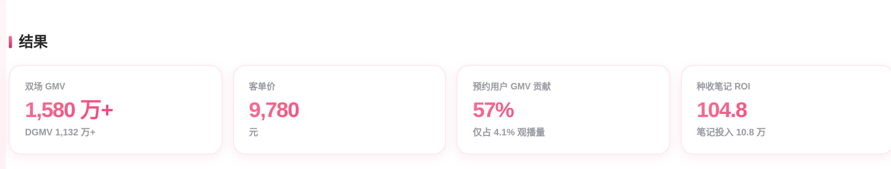
品类指南当初给出的价格带、产地结构与内容方向，与最终 130 个 SKU 的真实成交逐条对账（含未命中的部分）。这也是「先知后行」实证模块的原型——预测偏差本身即下一版知识层的输入。
把判断固化为组织能力，有四层递进路径。「先知后行」是这条路径的终点——在此之前，我已在日常岗位上主导设计并仍在使用下列工具。
方案初稿、场次复盘、数据分析 —— 效率提升有限，且不可复用
打通多系统接口，输入 ID 自动生成方案数据框架，效率由个人扩展至团队
运营工作台 + PRD / SOP —— 以产品视角明确使用对象、场景与意愿
多个看板收敛为一个完整应用「先知后行」，成为业务沟通的界面
| 工具 / 看板 | 解决什么判断 | 归属 |
|---|---|---|
| 邀约 brief 看板 | 这个账号值不值得建联？怎么打动他？ | 人 |
| 站外榜单匹配看板 | 站外供给有多少能撬动？怎么触达？ | 人 |
| 方案生成 Skill | 输入 ID 自动出结构化方案框架 | 人 |
| 人群洞察看板 | 这个账号的粉丝到底买什么？推什么货？ | 货 |
| 商家雷达看板 | 哪些商家货盘可撬动？优先建联谁？ | 货 |
| 高蓄水内容参考池 | 预热内容怎么写才有转化？ | 货 |
| 品类备货指南 | 进入新品类，备什么货、定什么价？ | 货 |
| 运营工作台 | 200+ 对象的日常管理与投流决策 | 人 场 |
下列工具均由本人独立完成需求定义、数据口径设计与搭建，并配套文档交付团队使用。
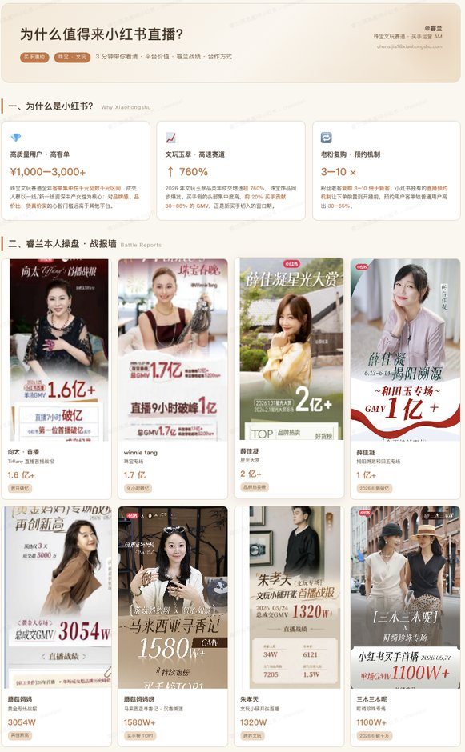
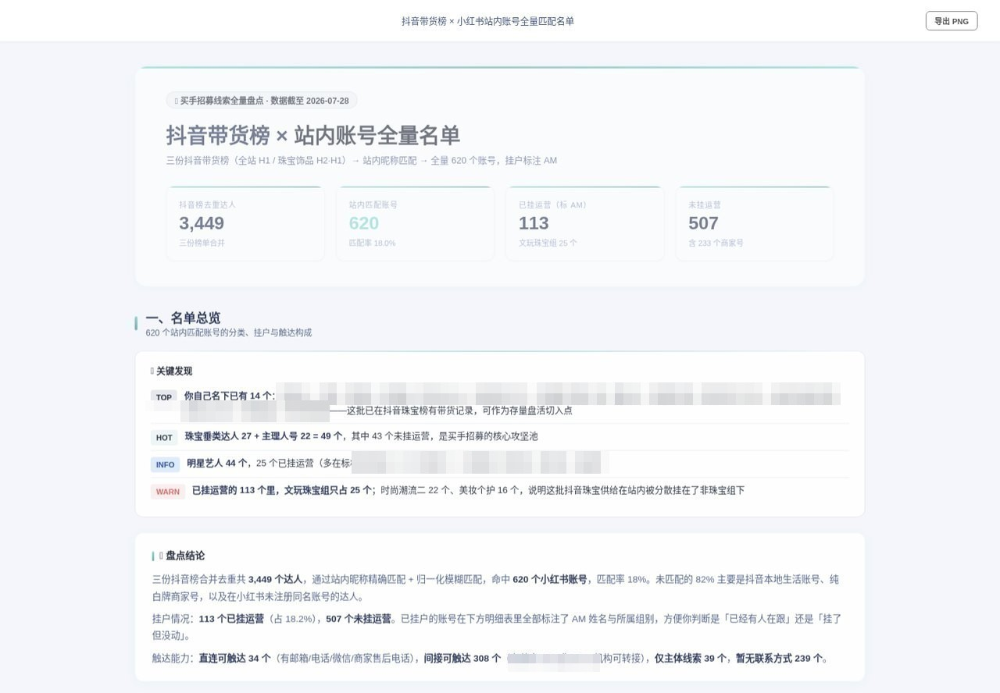
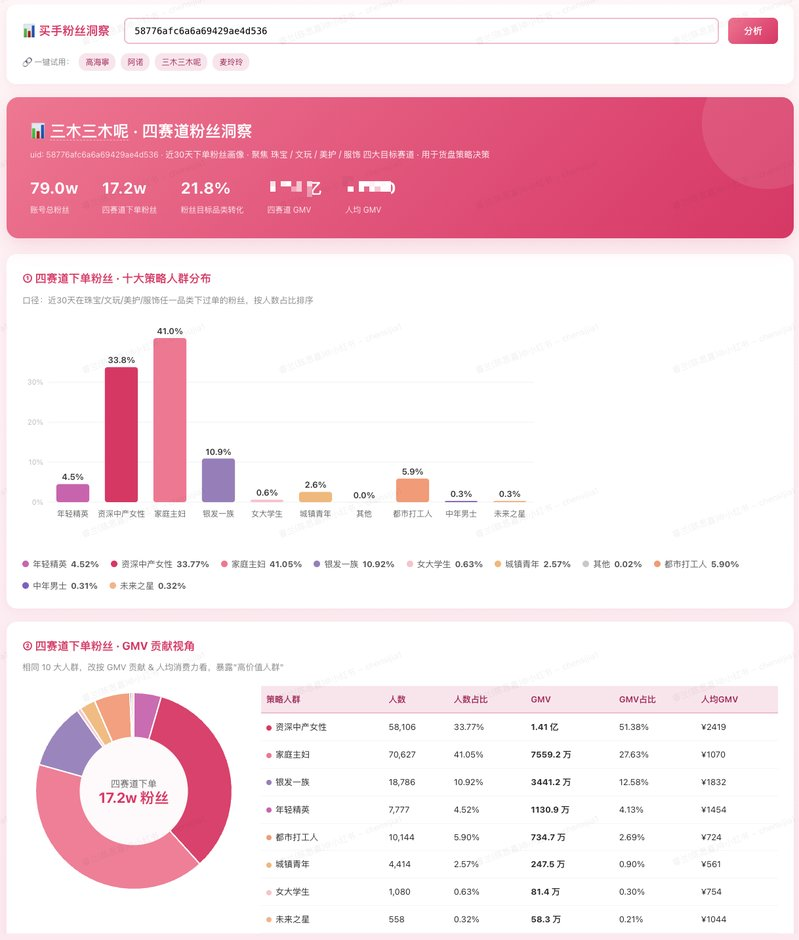
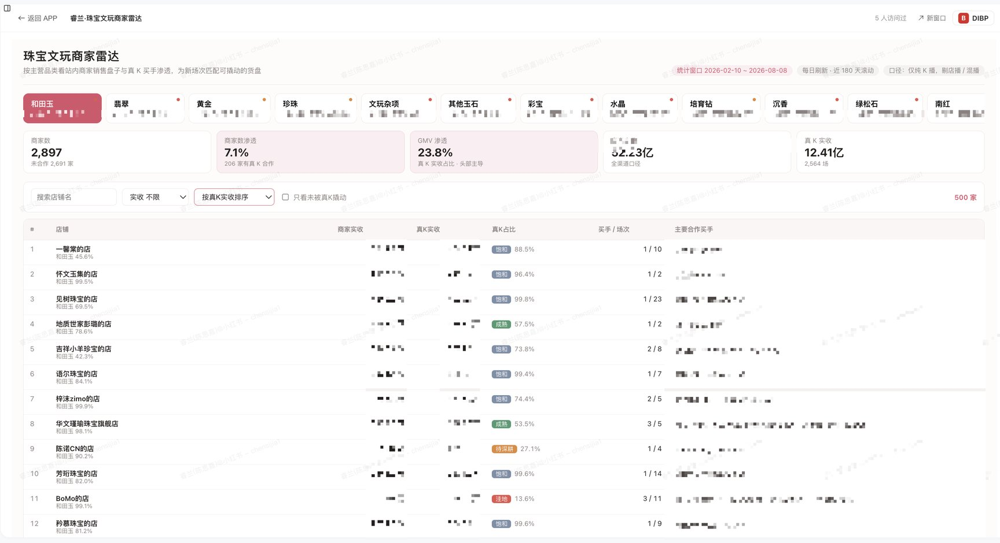
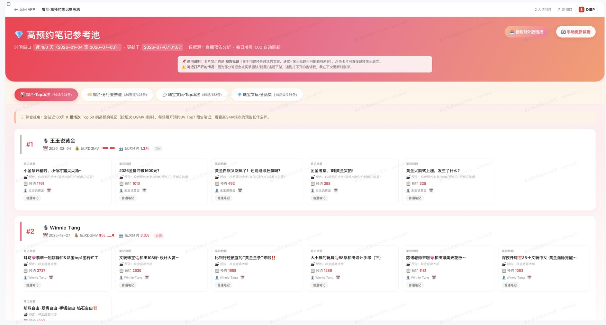
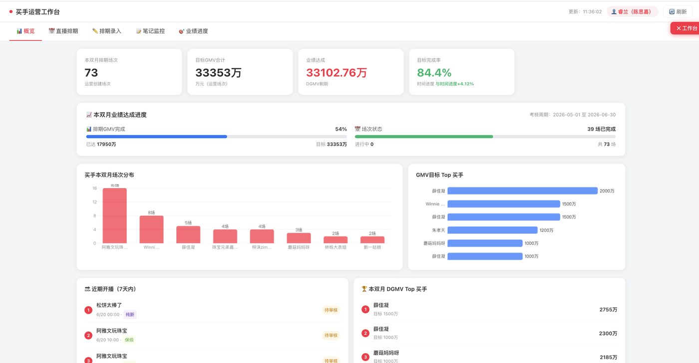
单个工具容易被理解为一次性展示型产出。更有价值的是能在真实岗位上持续识别卡点、并逐个转化为可复用方案——「先知后行」正是把这些分散的单点工具，收敛成一条从诊断到执行的完整链路。
Shopee 是策略中台视角，小红书是业务一线视角。两段经历构成了我对"策略如何落地"的完整认知。
视角：给一个区域的卖家群体设计规则。
核心工作：从 0 搭建 FY26 卖家增长预测模型——建立 5 类卖家标签体系，按成长阶段与品类特征分层，输出年度增长预测。
结果：模型预测偏差 7.2%，站点扩张报名率 23% → 58%，成为区域团队制定目标与分配资源的依据。
视角：给具体的人和货做判断。
核心工作：为账号建立准入标尺、匹配货盘、规划场次结构，并把判断沉淀成全组可用的工具与产品。
结果：8 个产品化工具 + 一个端到端 AI 决策产品；判断在具体场景中被真实结果验证。
中台提供的是"用分层与模型处理规模化问题"的方法；一线提供的是"策略需落地方能产生价值、而落地需依托工具承载"的认知。因此我在形成判断时，会同步评估它工具化的可行性——这正是策略中台岗位需要的思维方式。
高客单非标品的成交本质是信任转移。因此选择合作对象时会锁定特定画像，并对其粉丝人群、消费品类做前置洞察。
不同层级诉求不同：中小创作者关注收入确定性，明星艺人关注平台宣发与资源扶持。按对象类型调整信息优先级，而非罗列平台信息。
互联网电商迭代快，具体打法有效期有限，而沉淀方法论的能力具备长期价值。应以策略批量解决同类问题，而非逐个应对。
从金融转向互联网，跨进一个全新品类时我对这个行业几乎一无所知——
但我可以用数据快速建立对一个行业的认知框架，把"感觉"换成"依据"。
下一步：把这套"建标尺、做验证、沉淀复用"的方法，迁移到更完整的商业链路——用户增长、货品策略、广告投放效率，都是同一套逻辑。